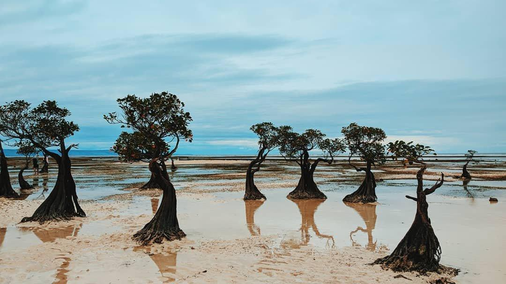

Nusa Tenggara Timur
Kabupaten Sumba Timur, yang beribu kota di Waingapu, merupakan wilayah terbesar di Pulau Sumba, Provinsi Nusa Tenggara Timur. Dengan luas mencapai sekitar 7.000 km², daerah ini mendominasi lebih dari separuh daratan pulau. Karakteristik utamanya ditandai oleh perbukitan kapur yang bergelombang, bentang alam sabana yang membentang luas, serta garis pantai eksotis di sisi utara dan selatan. Iklim di kawasan ini cenderung kering dengan musim kemarau yang panjang, membentuk lanskap perbukitan berwarna keemasan di musim kering dan hijau segar saat musim hujan tiba.
Kondisi geografi tersebut sangat memengaruhi mata pencaharian dan perekonomian masyarakat setempat. Sabana yang terhampar luas menjadikannya kawasan sentral peternakan, di mana kuda Sandalwood, sapi, dan kerbau dilepasliarkan secara bebas. Selain sektor peternakan, masyarakat memanfaatkan aliran sungai untuk bertani jagung dan padi, sementara wilayah pesisir dioptimalkan untuk sektor perikanan dan budi daya laut.
Keunggulan Sumba Timur juga terletak pada kekayaan budaya Marapu yang masih terjaga kuat. Jejak tradisi ini terlihat jelas dari arsitektur rumah adat beratap menjulang tinggi (Uma Bokulu), kompleks kubur batu megalitik, hingga tradisi pembuatan kain tenun ikat bermotif khas yang telah diakui dunia. Dipadukan dengan pesona alam seperti Bukit Wairinding, Sabana Puru Kambera, Air Terjun Tanggedu, dan pohon bakau ikonik di Pantai Walakiri, Sumba Timur menjadi salah satu destinasi wisata paling memikat di Indonesia timur.
Rumah Adat Uma Bokulu

Pohon Bakau Pantai Walakiri